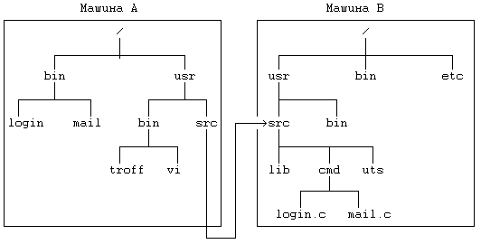
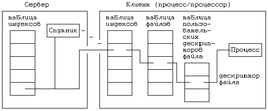

Термин "прозрачное распределение" означает, что пользователи, работающие на одной машине, могут обращаться к файлам, находящимся на другой машине, не осознавая того, что тем самым они пересекают машинные границы, подобно тому, как на своей машине они при переходе от одной файловой системе к другой пересекают точки монтирования. Имена, по которым процессы обращаются к файлам, находящимся на удаленных машинах, похожи на имена локальных файлов: отличительные символы в них отсутствуют. В конфигурации, показанной на Рисунке 13.10, каталог "/usr/src", принадлежащий машине B, "вмонтирован" в каталог "/usr/src", принадлежащий машине A. Такая конфигурация представляется удобной в том случае, если в разных системах предполагается использовать один и тот же исходный код системы, традиционно находящийся в каталоге "/usr/src". Пользователи, работающие на машине A, могут обращаться к файлам, расположенным на машине B, используя привычный синтаксис написания имен файлов (например: "/usr/src/cmd/login.c"), и ядро уже само решает вопрос, является файл удаленным или же локальным. Пользователи, работающие на машине B, имеют доступ к своим локальным файлам (не подозревая о том, что к этим же файлам могут обращаться и пользователи машины A), но, в свою очередь, не имеют доступа к файлам, находящимся на машине A. Конечно, возможны и другие варианты, в частности, такие, в которых все удаленные системы монтируются в корне локальной системы, благодаря чему пользователи получают доступ ко всем файлам во всех системах.

Рисунок 13.10. Файловые системы после удаленного монтирования
Наличие сходства между монтированием локальных файловых систем и открытием доступа к удаленным файловым системам послужило поводом для адаптации функции mount применительно к удаленным файловым системам. В данном случае ядро получает в свое распоряжение таблицу монтирования расширенного формата. Выполняя функцию mount, ядро организует сетевую связь с удаленной машиной и сохраняет в таблице монтирования информацию, характеризующую данную связь.
Интересная проблема связана с именами путей, включающих "..". Если процесс делает текущим каталог из удаленной файловой системы, последующее использование в имени символов ".." скорее вернет процесс в локальную файловую систему, чем позволит обращаться к файлам, расположенным выше текущего каталога. Возвращаясь вновь к Рисунку 13.10, отметим, что когда процесс, принадлежащий машине A, выбрав предварительно в качестве текущего каталог "/usr/src/cmd", расположенный в удаленной файловой системе, исполнит команду
cd ../../..
текущим каталогом станет корневой каталог, принадлежащий машине A, а не машине B. Алгоритм namei, работающий в ядре удаленной системы, получив последовательность символов "..", проверяет, является ли вызывающий процесс агентом процесса-клиента, и в случае положительного ответа устанавливает, трактует ли клиент текущий рабочий каталог в качестве корня удаленной файловой системы.
Связь с удаленной машиной принимает одну из двух форм: вызов удаленной процедуры или вызов удаленной системной функции. В первой форме каждая процедура ядра, имеющая дело с индексами, проверяет, указывает ли индекс на удаленный файл, и если это так, посылает на удаленную машину запрос на выполнение указанной операции. Данная схема естественным образом вписывается в абстрактную структуру поддержки файловых систем различных типов, описанную в заключительной части главы 5. Таким образом, обращение к удаленному файлу может инициировать пересылку по сети нескольких сообщений, количество которых определяется количеством подразумеваемых операций над файлом, с соответствующим увеличением времени ответа на запрос с учетом принятого в сети времени ожидания. Каждый набор удаленных операций включает в себя, по крайней мере, действия по блокированию индекса, подсчету ссылок и т.п. В целях усовершенствования модели предлагались различные оптимизационные решения, связанные с объединением нескольких операций в один запрос (сообщение) и с буферизацией наиболее важных данных (см. [Sandberg 85]).

Рисунок 13.11. Открытие удаленного файла
Рассмотрим процесс, который открывает удаленный файл "/usr/src/cmd/login.c", где "src" - точка монтирования. Выполняя синтаксический разбор имени файла (по схеме namei-iget), ядро обнаруживает, что файл удаленный, и посылает на машину, где он находится, запрос на получение заблокированного индекса. Получив желаемый ответ, локальное ядро создает в памяти копию индекса, корреспондирующую с удаленным файлом. Затем ядро производит проверку наличия необходимых прав доступа к файлу (на чтение, например), послав на удаленную машину еще одно сообщение. Выполнение алгоритма open продолжается в полном соответствии с планом, приведенным в главе 5, с посылкой сообщений на удаленную машину по мере необходимости, до полного окончания алгоритма и освобождения индекса. Взаимосвязь между структурами данных ядра по завершении алгоритма open показана на Рисунке 13.11.
Если клиент вызывает системную функцию read, ядро клиента блокирует локальный индекс, посылает запрос на блокирование удаленного индекса, запрос на чтение данных, копирует данные в локальную память, посылает запрос на освобождение удаленного индекса и освобождает локальный индекс. Такая схема соответствует семантике существующего однопроцессорного ядра, но частота использования сети (несколько обращений на каждую системную функцию) снижает производительность всей системы. Однако, чтобы уменьшить поток сообщений в сети, в один запрос можно объединять несколько операций. В примере с функцией read клиент может послать серверу один общий запрос на "чтение", а уж сервер при его выполнении сам принимает решение на захват и освобождение индекса. Сокращения сетевого трафика можно добиться и путем использования удаленных буферов (о чем мы уже говорили выше), но при этом нужно позаботиться о том, чтобы системные функции работы с файлами, использующие эти буферы, выполнялись надлежащим образом.
При второй форме связи с удаленной машиной (вызов удаленной системной функции) локальное ядро обнаруживает, что системная функция имеет отношение к удаленному файлу, и посылает указанные в ее вызове параметры на удаленную систему, которая исполняет функцию и возвращает результаты клиенту. Машина клиента получает результаты выполнения функции и выходит из состояния вызова. Большинство системных функций может быть выполнено с использованием только одного сетевого запроса с получением ответа через достаточно приемлемое время, но в такую модель вписываются не все функции. Так, например, по получении некоторых сигналов ядро создает для процесса файл с именем "core" (глава 7). Создание этого файла не связано с конкретной системной функцией, а завершает выполнение нескольких операций, таких как создание файла, проверка прав доступа и выполнение ряда операций записи.
В случае с системной функцией open запрос на исполнение функции, посылаемый на удаленную машину, включает в себя часть имени файла, оставшуюся после исключения компонент имени пути поиска, отличающих удаленный файл, а также различные флаги. В рассмотренном ранее примере с открытием файла "/usr/src/cmd/login.c" ядро посылает на удаленную машину имя "cmd/login.c". Сообщение также включает в себя опознавательные данные, такие как пользовательский и групповой коды идентификации, необходимые для проверки прав доступа к файлам на удаленной машине. Если с удаленной машины поступает ответ, свидетельствующий об успешном выполнении функции open, локальное ядро выбирает свободный индекс в памяти локальной машины и помечает его как индекс удаленного файла, сохраняет информацию об удаленной машине и удаленном индексе и по заведенному порядку выделяет новую запись в таблице файлов. В сравнении с реальным индексом на удаленной машине индекс, принадлежащий локальной машине, является формальным, не нарушающим конфигурацию модели, которая в целом совпадает с конфигурацией, используемой при вызове удаленной процедуры (Рисунок 13.11). Если вызываемая процессом функция обращается к удаленному файлу по его дескриптору, локальное ядро узнает из индекса (локального) о том, что файл удаленный, формулирует запрос, включающий в себя вызываемую функцию, и посылает его на удаленную машину. В запросе содержится указатель на удаленный индекс, по которому процесс-спутник сможет идентифицировать сам удаленный файл.
Получив результат выполнения любой системной функции, ядро может для его обработки прибегнуть к услугам специальной программы (по завершении которой ядро закончит работу с функцией), ибо не всегда локальная обработка результатов, применяемая в однопроцессорной системе, подходит для системы с несколькими процессорами. Вследствие этого возможны изменения в семантике системных алгоритмов, направленные на обеспечение поддержки выполнения удаленных системных функций. Однако, при этом в сети циркулирует минимальный поток сообщений, обеспечивающий минимальное время реакции системы на поступающие запросы.
Предыдущая глава || Оглавление || Следующая глава